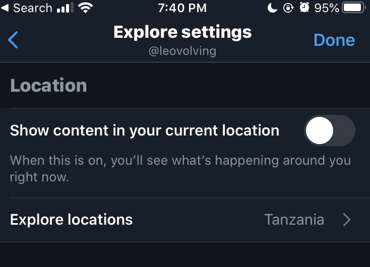

2020, amirite?
I don't want to talk about how bad 2020 is. We already know.
I want to talk about the fact that I couldn't stop doomscrolling, but now I can.
My anxiety peaked the first week of June. Since then, it's steadily getting better. I want to share what I did because I think it will help others.
Here’s what we’ll be covering:
- What is Doomscrolling?
- Social Media
- Stop Reading the News
- Find "Fidget" Apps
- No Stress Before Or After Bed
- Conclusion
What is Doomscrolling?
Doomscrolling is the act of compulsively consuming media (news, social media posts, etc) to the point that it affects your mental or physical health.
We've all done it.
As volatile as things are right now, obsessively scrolling on your phone won't help. Let's explore how to stop.
Social Media
Social Media. You knew it was coming. Let's get it done and over with.
Note: I don’t use much social media, so I can only share what I’ve done. Hopefully this will give you some ideas you can apply to other platforms.
Turn Off Notifications
If you’re viewing a lot of stressful content because people are tagging you and sending you DMs, cut the communication line.
I learned something from taking multiple breaks from social media:
You don't need social media to stay connected to the people who truly matter.
I disabled all social media notifications. I realized that I was spending a lot more time on social media when I was responding to every notification I received.
With notifications disabled, I decide when I use social media. The meme my friend sent me will be just as funny in a couple of hours.
Note that this has nothing to do with how much time you spend on social media. Use it as much as you want. Just have some autonomy in when you use it.
Change Twitter Trending Location
The “What’s Happening” (trending topics) section is the hardest part of Twitter for me. It entraps me with hashtags I can’t help but click.
I found that it wasn’t enough to turn off my location-specific settings. I had to explicitly set a new location that would have calmer topics.
I'm currently using Tanzania, the country of my people. The friend from whom I got the idea was using Finland.
The key is to use a country that won’t have many users. These countries won’t have many trending topics. Sometimes, there won’t be any trending topics!

Warning: some words and topics will still slip through the cracks. Be sure to mute words if you want to guarantee that you won’t see them!
Remove the App
Sometimes, the only way to mitigate stress from doomscrolling is to eliminate the opportunity. Take a break from social media.
Remove the app from your phone.
Log out from the website on your computer.
Change the password to something you can’t memorize to create an extra barrier to logging in again.
Don’t worry, this tends to be temporary. I once removed Twitter from my phone for about 10 days just to recharge.
When it comes to social media, a little break can do a lot of good.
There may be one social media account that's causing more stress than the others. If a specific app came to mind, delete it for a week. :)
Set a Timer
I don't have anything insightful to add here.
You know if you need a timer. If you need to use it, use it.
Your health is worth it. I promise.
Stop Reading the News
Don't get me wrong...Please check the news and stay informed.
Just don’t let it consume you. A lot of the news isn’t really news. A lot of it is just noise intended to lay stress on you.
Check the news 1-3 times throughout the day. No more.
The real news doesn’t change often enough to need to check it more than a couple of times. Anything more than this will cause undue stress.
You don’t need a push notification telling you the latest wild thing said on Capitol Hill.
You don’t need a shortcut to your News app, either.
I used to have a shortcut on my phone that allowed me to access my News app quickly and easily. Half of the time, I opened it out of boredom or habit.
There's a solution for that!
Find "Fidget" Apps
You’re gonna want to scroll aimlessly on your phone. It’s just a fact of life at this point.
Just be sure to have an app on your phone that you can use to lessen your anxiety instead of worsening it.
I call them "fidget" apps, because I don't have any real reason for using them in the moment. Like most times when I use social media, I'm just looking for something to keep my hands occupied.
Personally, my fidget app has been a real estate app so I can look at pictures of houses. I also use a bookmarking app that I've kinda turned into a vision board.
Whatever it is for you, just have a space where you can be on your phone and you know you won’t be stressed.
Games are a great option! So is reading, as long as the material isn't depressing.
No Stress Before Or After Bed
I saved the best for last. Truly.
Stay off of social media and the news for the first hour after you wake up, and at least an hour before bed.
I know reducing screen time before bed is important to help you sleep.
(But I also know that I’ll never actually do that.)
I at least try to limit myself to apps and websites that will enrich me in some way. This is why it's so important to have apps that don't promote doomscrolling.
Personally, I can't remember the last time I read something on social media that I needed to know immediately. Everything can generally wait until the morning (and after your morning routine).
Doomscrolling is bad at any time. But it's a horrible way to start the day, and I can't imagine a worse remedy for sleep.
Give yourself a break. Take some time that's just for you.
Conclusion
Again, please stay informed. Keep connecting with your loved ones.
Just have balance.
Remember that when you’re on social media, or reading a free news article, you’re the product. It’s their job to ensure that you use their platform as long as possible.
It’s your job to be aware of when you’re being monetized, and to do something about it.
You can stay informed without doomscrolling. I promise.
Please don’t wait until you’re sick with stress.